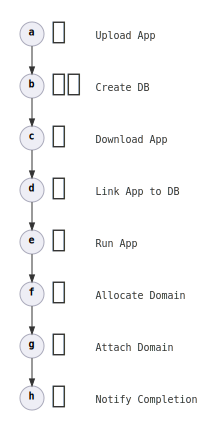
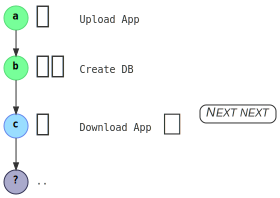
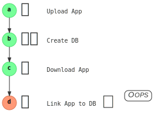
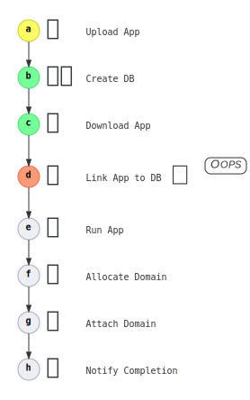
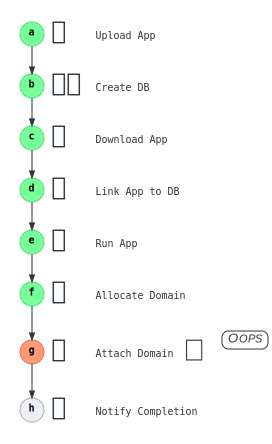
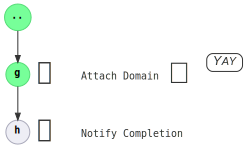
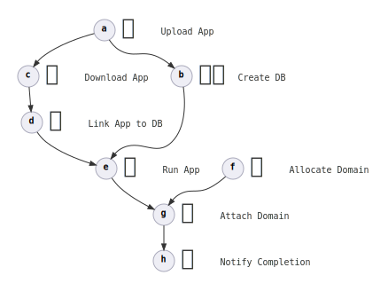

Introduction
User friendly automation is hard to write, and is hard to get right.
Minimum viable product (MVP) is not user friendly.
This book describes different dimensions that influence the user friendliness of software, and introduces a new library – choochoo – that tries to support writing software that is more user friendly.
Workflow Scenario
Consider the deployment steps for a standalone web application backed by a database.
The following steps represents this workflow:

Dimensions
In this book, a dimension is defined as a particular nature of something. Dimensions may be independent, and may be measurable. Some dimensions may be derived from and may be influenced by others.
For example, an object's dimensions are:
- Size
- Mass
- Temperature
- Colour
Software Dimensions
We will look at the following software dimensions, and show how choochoo supports building software with higher maturity levels of user friendliness.
- Path Handling: How exhaustive code path coverage is, and how each path is handled.
- State Visibility: What state is it in now, progress tracking.
- Understandability: Presentation / verbosity.
- Recoverability / Repeatability: Can execution resume from halfway.
- Performance / Efficiency: How well is execution scheduled, time spent, and resources used.
- Psychology: Did the user request what they intended?
Path Handling
How exhaustive code path coverage is, and how each path is handled.

Maturity Levels

Happy Path only

- If it works, it works.
- If it fails, it might crash, it might carry on with a bad value.
code snippets
Bash:
#! /bin/bash
curl http://somewhere.com/app.zip -o app.zip
# Much better with:
# set -euo pipefail
C#:
void AppDownload()
{
var webClient = new WebClient();
webClient.DownloadFile("https://somewhere.com/app.zip", "app.zip");
}
In Rust:
fn app_download() {
let bytes = reqwest::blocking::get("https://somewhere.com/app.zip")
.unwrap()
.bytes()
.unwrap();
let mut file = File::create("app.zip").unwrap();
file.write_all(bytes).unwrap();
}
Model Attributes
- Fast to implement / test how things should work.
- Maintenance cost scales quickly with usage.
- Difficult (costly) to diagnose failure (no logic to reply with failure information).
It worked vs it didn't
Similar to "happy path only", but treat all errors the same.
To the user, this is similar to happy path only, but in code, there is effort to capture whether something worked vs it did not work.

code snippets
C#:
void AppDownload()
{
var webClient = new WebClient();
try { webClient.DownloadFile("https://somewhere.com/app.zip", "app.zip"); }
catch (Exception e)
{
throw new System.InvalidOperationException("Failed to download app.zip", e);
}
}
Rust:
fn app_download() -> Result<(), Box<dyn std::error::Error>> {
let bytes = reqwest::blocking::get("https://somewhere.com/app.zip")?.bytes()?;
let mut file = File::create("app.zip")?;
file.write_all(bytes)?;
}
Model Attributes
- Medium effort to implement / test how things should work.
- Maintenance cost still scales quickly with usage.
- May be difficul to diagnose failure (failure information is not suitable to pass across systems – not strongly typed).
99% complete1 handling
Every code path is handled; same treatment of two code paths is intentional.

Every error has its own type, so at compile time you know exactly what case you are handling.
Rust supports you by having sum types and exhaustive pattern matching.
code snippets
C#:
void AppDownload()
{
var webClient = new WebClient();
var download_failed = new System.InvalidOperationException("Failed to download app.zip", e);
// https://docs.microsoft.com/en-us/dotnet/api/system.net.webclient.downloadfile?view=net-5.0
try { webClient.DownloadFile("https://somewhere.com/app.zip", "app.zip"); }
catch (ArgumentNullException e) { throw download_failed; }
catch (WebException e) { throw download_failed; }
catch (NotSupportedException e) { throw download_failed; }
}
Rust:
enum Error {
Connect(reqwest::Error),
Download(reqwest::Error),
AppCreateFile(std::io::Error),
AppWriteToDisk(std::io::Error),
}
fn app_download() -> Result<(), Error> {
let bytes = reqwest::blocking::get("https://somewhere.com/app.zip")
.map_err(Error::Connect)?
.bytes()
.map_err(Error::Download)?;
let mut file = File::create("app.zip").map_err(Error::AppCreateFile)?;
file.write_all(bytes).map_err(Error::AppWriteToDisk)?;
}
Model Attributes
- Highest effort to implement.
- Maintenance cost scales slowly with usage.
- Easier to diagnose failure as the error should indicate the exact point in the sequence of events where the failure occurs.
1 99% because we aren't handling running out of memory, or the power went out
API Implications
- Any possible failing functions must return
Result. - So, the return type of consumer-implemented functions must be type parameterized.
- Handle interrupts and stop gracefully.
choochoo constrains users to provide srcerr:SourceError<E>, which requires users to implement:
- Strongly typed error codes.
- Provide the error information that
codespan-reportingcan consume.
Importance
Arguably the most important dimension for robustness – ensuring that a system is not left in an unknown / unrecoverable state.
Live Demo
-
Artifact server:
mkdir /tmp/server && cd /tmp/serversimple-http-server --nocache -u --ip 127.0.0.1 --port 8000 -l 100000000 -
Build agent:
mkdir -p /tmp/choochoo/demo/station_a/ && cd /tmp/choochoo/demo/station_a/for i in {1..200000}; do printf "application contents $i"; done | gzip -f > app.ziprm -rf /tmp/choochoo/demo/station_{b,c,d,e,f,g,h} /tmp/server/app.zip -
choochoo:time ./target/release/examples/demo
Scenarios:
- Happy Path.
- Cannot connect to artifact server.
- Stop server before downloading.
State Visibility
What state is it in now, progress tracking.
Is enough information captured and presented.
Maturity Levels
Zero Visibility: It's running vs it's not.

Imperative: You can see the completed steps, but not necessarily remaining steps.

If it fails, you will be able to see how far it got.

Planner: The steps to completion are known, and progress is shown.

API Implications
- Need overall execution plan steps.
- Additional steps discovered at runtime are "sub-steps".
- Elapsed duration is essential.
- Accurate estimated duration remaining is nice, but can be difficult to provide.
Live Demo
- All tasks are listed.
- Each task has progress limit.
- Colours for failure / success / in progress.
Understandability
Presentation / verbosity.
Show information when it's relevant, hide information when it's not.
Maturity Levels
📃 Text, text everywhere..
Show the user 200 MB of uncoloured logs per minute.
2021-02-21T15:13:01.123 | Debug | my::krate::module | Starting application.
2021-02-21T15:13:01.325 | Info | another::krate::module | Connecting to server.
2021-02-21T15:13:01.500 | Debug | third::krate::module | Resolving DNS for `some.domain.com`.
2021-02-21T15:13:01.531 | Debug | someones::krate::module | Looking up name server for `some.domain.com`
2021-02-21T15:13:01.570 | Debug | third::krate::module | DNS Resolved to 1.2.3.4
..
🎨 Beautiful
"The ultimate complexity is simplicity."
- Show useful information.
- Hide unnecessary information.
- Could: Show progress detail for current step, hide detail when it's done.
- Highlight important information, dim contextual information.
Example progress:
❯ ./target/release/examples/demo --concurrent ✅ a Upload App [████████████████████████████████████████] 26.01KiB/26.01KiB (0s Ok!) ⠦⠦b Create DB [███████████████████████████░░░░░░░░░░░░░] 68B/100B (0s 1s) ✅ c Download App [████████████████████████████████████████] 26.01KiB/26.01KiB (0s Ok!) ⏳ d Link App to DB [ ] 0/100 (queued) ⏳ e Run App [ ] 0/100 (queued) ⠤⠤f Allocate Domain [██████████████████████████░░░░░░░░░░░░░░] 67B/100B (0s 1s) ⏳ g Attach Domain [ ] 0/100 (queued) ⏳ h Notify Completion [ ] 0/100 (queued)
Example error:
❯ ./target/release/examples/demo --concurrent ❌ a Upload App [░░░░░░░░░░░░░░░░░░░░░░░░░░░░░░░░░░░░░░░░] 0B/772.42KiB (0s) ☠️ b Create DB [░░░░░░░░░░░░░░░░░░░░░░░░░░░░░░░░░░░░░░░░] 0/100 (parent failed) ☠️ c Download App [░░░░░░░░░░░░░░░░░░░░░░░░░░░░░░░░░░░░░░░░] 0/100 (parent failed) ☠️ d Link App to DB [░░░░░░░░░░░░░░░░░░░░░░░░░░░░░░░░░░░░░░░░] 0/100 (parent failed) ☠️ e Run App [░░░░░░░░░░░░░░░░░░░░░░░░░░░░░░░░░░░░░░░░] 0/100 (parent failed) ✅ f Allocate Domain [████████████████████████████████████████] 100B/100B (0s Unchanged) ☠️ g Attach Domain [░░░░░░░░░░░░░░░░░░░░░░░░░░░░░░░░░░░░░░░░] 0/100 (parent failed) ☠️ h Notify Completion [░░░░░░░░░░░░░░░░░░░░░░░░░░░░░░░░░░░░░░░░] 0/100 (parent failed) error[E06]: Failed to connect to artifact server. ┌─ artifact_server_address:1:8 │ 1 │ http://127.0.0.1:8000 │ ^^^^^^^^^^^^^^ failed to connect to server │ = Try running `simple-http-server --nocache -u --ip 127.0.0.1 --port 8000`.
API Implications
-
Provide mechanism to specify end limit and progress.
-
Collect information, present it in a useful way:
- Real time interactive CLI presentation.
- Useful errors.
choochoo currently uses indicatif to display progress, and codespan-reporting to display errors.
indicatif provides:
- Progress rendering
- Elapsed time
- Estimated time remaining
- Styling
Recoverability / Repeatability
Can execution resume from halfway.
Workflow Steps

Maturity Levels
🧹 Need manual clean up, then restart from scratch.
Usually takes effort to:
- Find out what needs cleaning up.
- Figure out how to clean up, and do it.
This will happen again.
🔁 Restart from scratch.
Tooling can automatically clean up for you.
Maybe you want to keep the failing environment around for investigation.
♻️ Reuse and recycle

-
If it's already done, we won't do it again.
-
Replace / update existing resources.
-
Dependency updates must be propagated.
- Re-download file if it changed.
- Restart the web application if configuration changed.
This means if we fail at 90% / 2 hours into the process, we can restart at that point without waiting another 2 hours.
API Implications
- Implementors should provide a "check" function, and a "do it" function.
- The check function checks if the task is in the desired state.
- If not, the do it function is called.
choochoo:
- Requires a
visit_fn("do it" function). check_fnis run if present, otherwise it always runs thevisit_fn.- Bonus: The check function is run after the visit function to detect if the logic is correct.
Live Demo
- Run it twice.
- Replay last 2 steps.
- Update the file.
time ./target/release/examples/demo
rm -rf /tmp/choochoo/demo/station_{g,h}
-
514 KB, 1 second
for i in {1..200000}; do printf "application contents $i"; done | gzip -f > app.zip -
5 MB, 7 seconds
for i in {1..2000000}; do printf "application contents $i"; done | gzip -f > app.zip
Performance / Efficiency
How well is execution scheduled, time spent, and resources used.

Maturity Levels
Sequential: One thing at a time.
- Very simple for troubleshooting.
- Usually already good enough.
No (extra) threads, no threading problems.
Coarse parallelism: Make a thread per task.
"More threads means more speed right?"
Only if you design for it.
This is like having one person allocated to each task. If your task breakdown is not good, then a person will be idling.
Granular concurrency: Task hopping.
When a threads needs to wait for something to be done for a given task, it can switch to another task – assuming the task switched to can be worked on by different threads.
API Implications
- Use
asyncto operate concurrently. - Use multiple threads for parallelism.
- Shared data must be behind appropriate
RwLocks. - Can hurt API ergonomics.
- Potential for deadlock if not designed well.
choochoo:
- Uses
Pin<Box<dyn Future .. >>for the function return types – tasks cannot be worked on by different threads. - Uses
tokioas the async executor.
Live Demo
rm -rf /tmp/choochoo/demo/station_{b,c,d,e,f,g,h} /tmp/server/app.zip
time ./target/release/examples/demo
time ./target/release/examples/demo --concurrent
Psychology
Did the user request what they intended?
Does the software understand the intent of the user?
a.k.a. Can the developer predict intent ahead of time?
Maturity Levels
# User: "create 100 servers"
choochoo deploy --server-count 100
Do as they say. Every time.
Want 100 servers? Sure.
Guess desired state.
There's already 10 servers, so I'll just add 90 more.
Protect from extreme values.
❯ choochoo deploy --server-count 100 warning[W02]: High server count. ┌─ command:1:16 │ 1 │ choochoo deploy --server-count 100 │ ^^^^^^^^^^^^^^^^^^ specified here │ = This can incur high costs. = Specify the `--allow-high-server-count` flag to bypass this check.
🚂 Please type `pancakes` to proceed: ❯ pancakes_
API Implications
- Provide types with value limit checking.
- Detect long elapsed time, and support graceful interrupt handling.
- Design for dry run – show what the software would do.
choochoo doesn't do this yet.
Future
To Do
- Dry run.
- Make API ergonomic.
- More granular execution.
- Refine shared data access.
- Handle signals (like
SIGINT).
More Ideas
- Use
choochoonot just for the deployment tool, but the agent running on the web server. - Split core functionality, have web frontend.
- Serialize state to disk – save / load execution.
Questions, Feedback, Comments
Links
Common Issues
- Execution fails halfway -- "like rolling the dice."
- Flakey connections / services.
- Misspecified configuration / parameters.
- User does incorrect action / hard to troubleshoot.
- Too much information presented to user.
- Not enough information presented to user.
- No access to information.
- Not knowing of access to information.
- User may not understand information.
- Hacked automation.
- Tools calling tools.
- No proper API to invoke / receive information.
- Parallel / concurrent execution interferes with each other.
- Inadequate namespacing.
- Cost / unused resources.
- Forgot to clean up.
- No means to clean up.
- Unaware that resource is allocated but not freed.